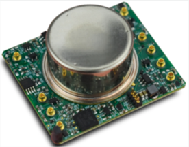
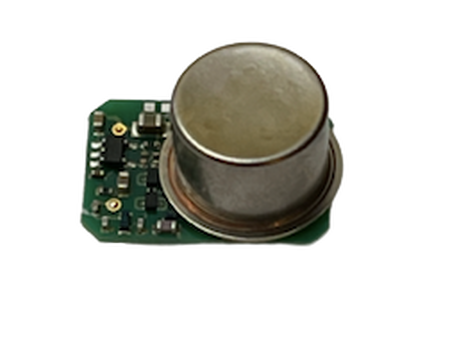
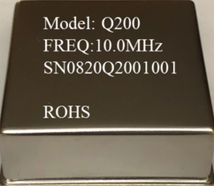
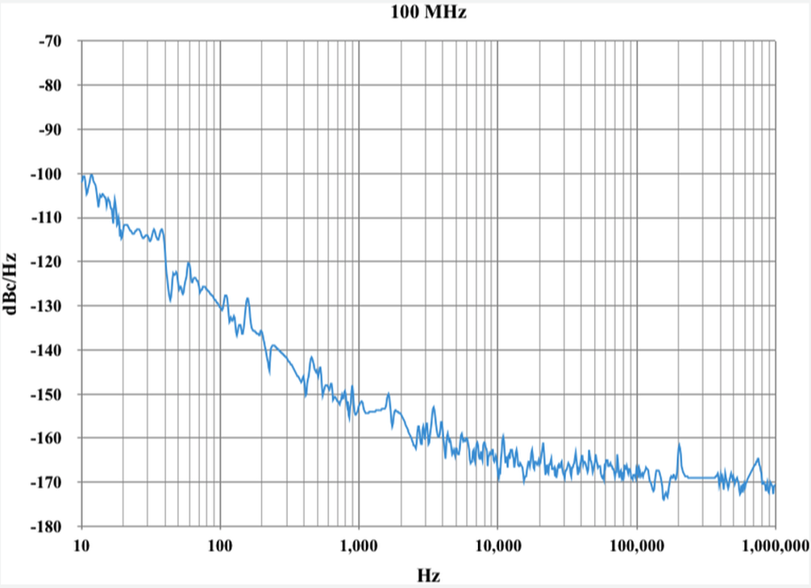

TimeCubic Inc. engineers ultra-low power oscillators (<60 mW), 1PPS disciplined timing modules, and atomic standards with proprietary thermal design and advanced signal processing—built for mission-critical deployments where every milliwatt matters.

Ultra-low power 1PPS disciplined oscillator module with sub-nanosecond phase measurement and RS232 time-of-day telemetry.
From deep subsea ocean bottom nodes to aerospace payloads, our modular oscillators deliver unmatched battery endurance and holdover precision.

Designed for seabed seismic nodes (OBN) and battery systems. Low phase noise, optional aging grade, HCMOS output up to 100 MHz.
Disciplined to 1 ns RMS phase and <10-12 in frequency. Continuous 1-second phase reporting and RS232 time-of-day interface.

High-stability 1PPS GPS/satellite synchronization module with RS232 telemetry, low phase noise, and multiple frequency outputs (5 MHz, 8.192 MHz, 10 MHz).
TimeCubic was founded in 2017 by an accomplished team of physicists and electronic engineers with over 30 years in frequency control. We hold proprietary patents and design secrets addressing the fundamental trade-off between power consumption and thermal stability.
Achieves TCXO/OCXO-grade temperature stability while consuming only 10% to 20% of typical ovenized oscillator power.
Continuous 1-second phase measurement reports drift in real-time over standard RS232, enabling predictive drift compensation.
Qualified for continuous 60-day to 120-day ocean bottom deployment up to 6,000 meters depth under isothermal conditions.

TimeCubic specializes in custom engineered timing solutions for defense, subsea, and telecom systems. Contact our application engineering team in Woburn, MA for custom test data and evaluation units.